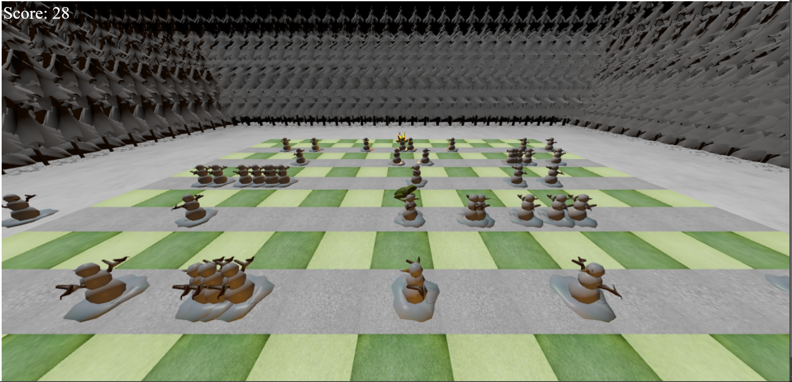
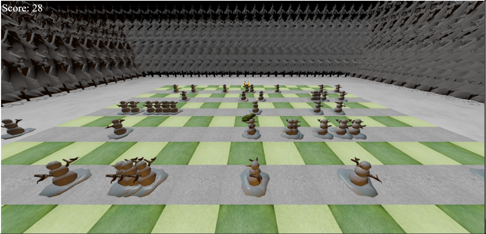
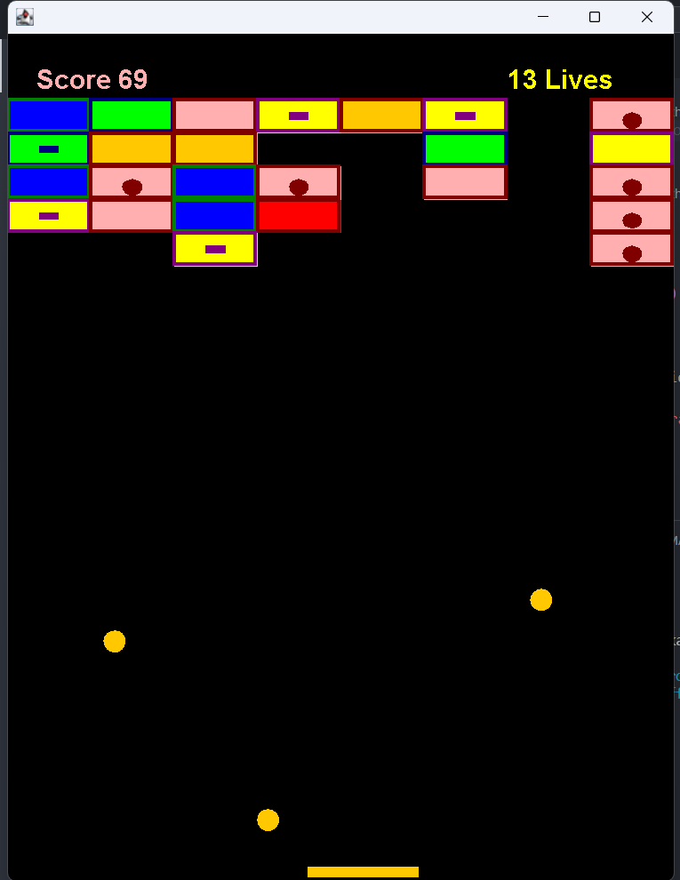
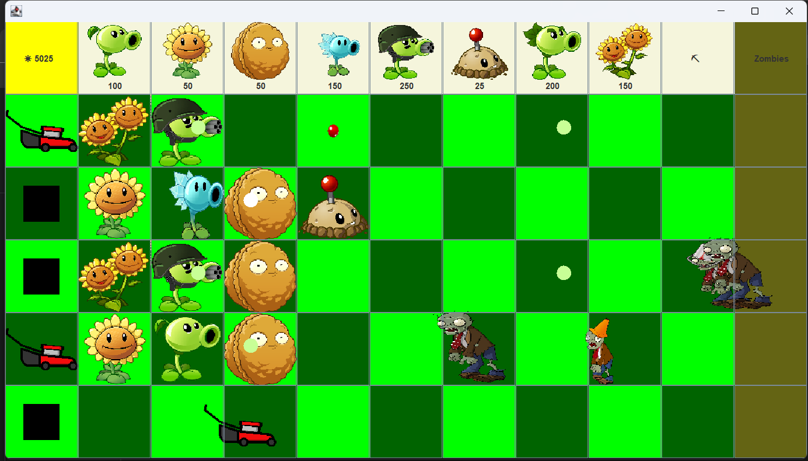

Frogger 3D
Developed a Frogger-inspired 3D game using Three.js and JavaScript. Implemented grid-based movement, increasing difficulty, and collision detection using bounding boxes.
I'm a Computer Science student at Sonoma State University (B.S. in CS, minor in Philosophy), passionate about GPU acceleration, robotics, and real-world AI deployment. I'm currently a Technology Intern at OurCo, where I focus on QA, CI/CD improvements, and cross-platform reliability.
Trained a PyTorch classifier on 2M records, exported to ONNX, and benchmarked inference latency across CPU, CUDA, and TensorRT for real-time use cases.
View ProjectImplemented a GPU-accelerated Julia Set fractal renderer using CUDA. Profiled kernel launches, memory transfers, and vector scaling behavior, achieving 30x CPU speedup.
View ProjectDeveloped a Raspberry Pi-powered robot dog using ultrasonic and camera sensors for real-time navigation. Co-authored a whitepaper analyzing military use of robotic dogs and proposing UN-aligned regulation (IEEE, DoD).
View ProjectDeveloped a Frogger-inspired 3D game using Three.js and JavaScript. Implemented grid-based movement, increasing difficulty, and collision detection using bounding boxes.
This Java project showcases my understanding of object interaction and inheritance. I enhanced the classic arcade game Breakout by adding upgrades and implementing the paddle-ball collision mechanics.
A tower defense game developed as a clone of Plants vs Zombies, demonstrating my skills in inheritance, polymorphism, and debugging large projects. It was a significant learning experience in handling complex game mechanics and graphics.
Email: MarioLucido94@gmail.com
Phone: 707-301-0025